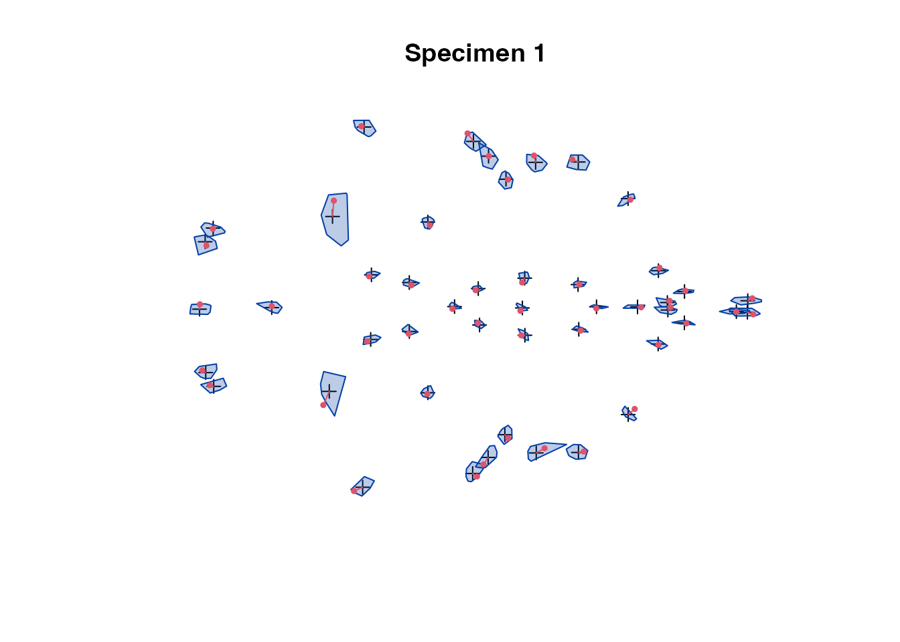
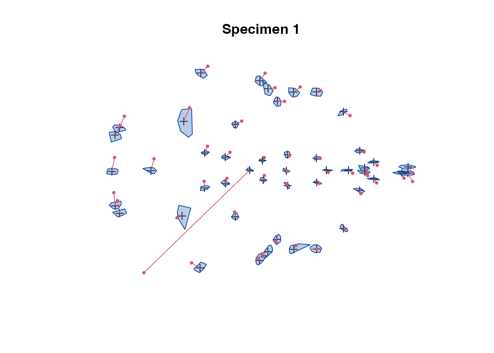

EDMA data
Peter Solymos
edma01-data.RmdIntroduction
EDMAinR is an R package for Euclidean Distance Matrix Analysis (EDMA). EDMA is a coordinate‐free approach for comparing biological shapes using landmark data.
We can install the package from GitHub as:
if (!require(EDMAinR)) {
if (!require(remotes))
install.packages("remotes")
remotes::install_github("psolymos/EDMAinR")
}We can now load the package:
Landmark data
Use the read_xyz function to read 2 or 3 D landmark data from *.xyz files. First we specify the paths to two xyz files:
Note: we use the system.file() function to access example files from the package. When defining your own files, you will either set the working directory using setwd() or a path like c:/Users/<user>/<etc>.
Now we can read in these text files:
The data objects are lists with 2 elements:
-
$namecontains info about the file from its header -
$datacontains the landmark data
Here are the methods that we can use to learn more about the data sets.
Access dimensions (landmarks, \(K\); dimensions, \(D\); replicates, \(n\)) and dimension names (landmark_names returns the landmark labels):
dim(x)
#> [1] 47 3 28
dimnames(x)
#> [[1]]
#> [1] "amsph" "bas" "cpsh" "ethma" "ethmp" "laalf" "lasph" "lflac"
#> [9] "lnsla" "lnslp" "locc" "loci" "lpalf" "lpfl" "lpmx" "lpns"
#> [17] "lpsh" "lpsq" "lpto" "lptyp" "lsqu" "lsyn" "lzya" "lzygo"
#> [25] "lzyt" "opi" "raalf" "rasph" "rflac" "rmaxi" "rnsla" "rnslp"
#> [33] "rocc" "roci" "rpalf" "rpfl" "rpmx" "rpns" "rpsh" "rpsq"
#> [41] "rpto" "rptyp" "rsqu" "rsyn" "rzya" "rzygo" "rzyt"
#>
#> [[2]]
#> [1] "X" "Y" "Z"
#>
#> [[3]]
#> [1] "CZCD1_1" "CZCD1_2" "CZCD1_7" "CZCD1_10" "CZCD1_11" "CZCD1_15"
#> [7] "CZCD1_16" "CZCD1_18" "CZCD1_20" "CZCD1_21" "CZCD1_23" "CZCD1_24"
#> [13] "CZCD1_25" "CZCD1_28" "CZCD1_30" "CZCD1_32" "CZCD1_36" "CZCD1_37"
#> [19] "CZCD1_39" "CZCD1_40" "CZCD1_42" "CZCD1_53" "CZCD1_56" "CZCD1_59"
#> [25] "CZCD1_65" "CZCD1_66" "CZCD1_72" "CZCD1_73"
landmarks(x)
#> [1] "amsph" "bas" "cpsh" "ethma" "ethmp" "laalf" "lasph" "lflac"
#> [9] "lnsla" "lnslp" "locc" "loci" "lpalf" "lpfl" "lpmx" "lpns"
#> [17] "lpsh" "lpsq" "lpto" "lptyp" "lsqu" "lsyn" "lzya" "lzygo"
#> [25] "lzyt" "opi" "raalf" "rasph" "rflac" "rmaxi" "rnsla" "rnslp"
#> [33] "rocc" "roci" "rpalf" "rpfl" "rpmx" "rpns" "rpsh" "rpsq"
#> [41] "rpto" "rptyp" "rsqu" "rsyn" "rzya" "rzygo" "rzyt"
dimensions(x)
#> [1] "X" "Y" "Z"
specimens(x)
#> [1] "CZCD1_1" "CZCD1_2" "CZCD1_7" "CZCD1_10" "CZCD1_11" "CZCD1_15"
#> [7] "CZCD1_16" "CZCD1_18" "CZCD1_20" "CZCD1_21" "CZCD1_23" "CZCD1_24"
#> [13] "CZCD1_25" "CZCD1_28" "CZCD1_30" "CZCD1_32" "CZCD1_36" "CZCD1_37"
#> [19] "CZCD1_39" "CZCD1_40" "CZCD1_42" "CZCD1_53" "CZCD1_56" "CZCD1_59"
#> [25] "CZCD1_65" "CZCD1_66" "CZCD1_72" "CZCD1_73"Subsetting the data comes handy sometimes. The most general way to subset the data sets is via the [ function, the 3 indices inside the brackets refer to the landmarks, dimensions, and specimens:
x[1:10, , ] # select the 1st 10 landmarks
#> EDMA data: Crouzon P0 MUT
#> 3 dimensions, 10 landmarks, 28 specimens
x[ , 1:2, ] # select 2 of the 2 dimensions
#> EDMA data: Crouzon P0 MUT
#> 2 dimensions, 47 landmarks, 28 specimens
x[ , , 1:20] # select the 1st 20 individuals
#> EDMA data: Crouzon P0 MUT
#> 3 dimensions, 47 landmarks, 20 specimens
x[1:10, , 1:20] # combine multiple indices
#> EDMA data: Crouzon P0 MUT
#> 3 dimensions, 10 landmarks, 20 specimensThe data ($data) format inside the object x is list of the \(K \times D\) matrices for each individual. Sometimes it is handy to stack these matrices and create a rectangular data (either as a matrix, or data frame, with \(n \times K\) rows and \(D\) columns):
str(as.matrix(x))
#> num [1:1316, 1:3] 5.85 2.79 6.86 9.11 8.25 ...
#> - attr(*, "dimnames")=List of 2
#> ..$ : chr [1:1316] "CZCD1_1_amsph" "CZCD1_1_bas" "CZCD1_1_cpsh" "CZCD1_1_ethma" ...
#> ..$ : chr [1:3] "X" "Y" "Z"Note: we are using str to show the structure of these objects, this is not necessary when exploring the data.
Alternatively, we can store the data as an array (\(K \times D \times n\)):
str(as.array(x))
#> num [1:47, 1:3, 1:28] 5.85 2.79 6.86 9.11 8.25 ...
#> - attr(*, "dimnames")=List of 3
#> ..$ : chr [1:47] "amsph" "bas" "cpsh" "ethma" ...
#> ..$ : chr [1:3] "X" "Y" "Z"
#> ..$ : chr [1:28] "CZCD1_1" "CZCD1_2" "CZCD1_7" "CZCD1_10" ...Data sets can be checked using the plot function. The function steps through all the specimens to check for any surprises. The grey areas shows the convex hull for the landmark leaving the specimen out, while red dots show the actual specimen. We will insert an error to show how it can be helpful:
## original values for specimen 1
plot(x, which=1)
## we change the 1st landmark
xwrong <- x
xwrong$data[[1]][1,1:2] <- c(2, 2)
plot(xwrong, which=1)

The ordination and cluster dendrogram
